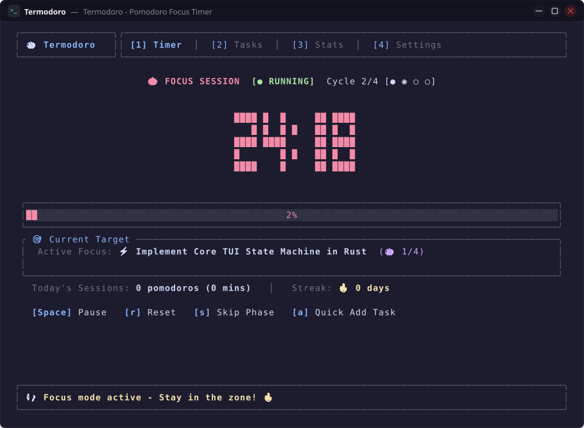

Terminal Pomodoro & Task Management in Pure Rust
A keyboard-driven, ultra-responsive productivity system crafted with Ratatui. No Electron bloat, zero telemetry, sub-15MB RAM footprint, and instant focus flow.

Why Developers Choose Termodoro
Built from scratch in safe, modern Rust to deliver the cleanest terminal productivity experience with zero distractions.
Sub-10ms Startup & Minimal RAM
Compiled directly to native machine code with Ratatui and Crossterm. Launches instantaneously in under 10 milliseconds and consumes under 15MB RAM.
100% Offline & Zero Telemetry
Your tasks, analytics, and preferences are stored strictly on your local disk adhering to XDG standards. Zero cloud dependencies, accounts, or trackers.
18 Built-in High-Contrast Themes
Switch on the fly between Catppuccin, Nord, Gruvbox, Tokyo Night, Dracula, Kanagawa, Everforest, Rose Pine, Synthwave '84, and pure OLED pitch black.
Pure In-Memory Audio Synthesis
Procedural RIFF WAV sound generation for Zen Tibetan singing bowls (528 Hz harmonics) and crisp alerts, paired with native desktop notifications.
Productivity Analytics & Streaks
Track daily focus time, 7-day visual bar charts, total Pomodoro counts, and consecutive active day streaks with automatic calendar day rollover.
tmux & Zellij Multiplexer Ready
Runs directly inside side-panes, floating windows, or dedicated workspace tabs with responsive Unicode gauge resizing and status reporting.
18 Curated Color Palettes
Click any palette card below to preview the color scheme live across the website.
Installation & Setup
Get up and running in seconds via Cargo, source build, or multiplexer integration.
# 1. Install ALSA audio headers & build tools (one-time setup)
# Ubuntu / Debian:
sudo apt update && sudo apt install -y build-essential git libasound2-dev pkg-config
# Arch Linux:
sudo pacman -S --needed base-devel git alsa-lib pkgconf
# Fedora / RHEL:
sudo dnf install -y git alsa-lib-devel pkgconf-pkg-config
# 2. Install Termodoro globally via Cargo
cargo install --git https://github.com/amanalip/Termodoro.git
# (Optional) Or compile locally from source:
git clone https://github.com/amanalip/Termodoro.git && cd Termodoro && cargo install --path .
# 3. Launch Termodoro
termodoroErgonomic Keybindings Reference
Vim-inspired shortcuts designed for speed and zero mouse dependence.
| Key / Shortcut | Action Description | Context |
|---|---|---|
| Space | Toggle Start / Pause (Timer) • Toggle Task Done (Tasks) • Toggle Flag (Settings) | Contextual |
| r | Reset current countdown timer to initial duration | Timer |
| s | Skip current Pomodoro or Break phase immediately | Timer |
| 1 / 2 / 3 / 4 | Jump directly to Timer (1), Tasks (2), Stats (3), Settings (4) | Global |
| Tab / Shift+Tab | Cycle forward / backward sequentially through all navigation tabs | Global |
| a | Open Add Task modal (Title input + 1-20 Pomodoro estimation) | Timer / Tasks |
| t | Bind highlighted task as active goal target for the Pomodoro timer | Tasks |
| Enter | Toggle completed status on selected task • Save task modal | Tasks / Modals |
| d / x | Delete highlighted task from backlog | Tasks |
| j / ↓ • k / ↑ | Navigate cursor up / down through task list rows or settings items | Tasks / Settings |
| 1 / 2 / 3 | Switch task backlog view filters: [1] All • [2] Active • [3] Completed | Tasks |
| h / ← • l / → (or + / -) | Adjust interval duration mins or cycle through all 18 color themes | Settings / Modals |
| ? | Toggle floating Help & Keybindings popup modal overlay | Global |
| q / Esc | Dismiss active modal • Safely persist state to disk and quit | Global |